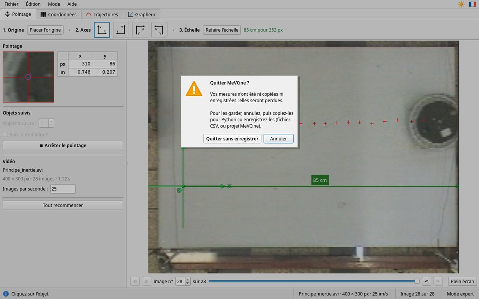

Exporter les mesures
Le tableau, la copie pour Python, le fichier CSV, les projets
Le tableau des mesures
Le tableau (à droite en mode simplifié, onglet Coordonnées en mode expert) a une ligne par image pointée :
t (s): la date de l'image, comptée depuis la première image pointée, qui est à t = 0 ;x (m),y (m): les coordonnées de l'objet dans votre repère. Avec plusieurs objets :x1,y1,x2,y2… Sans échelle, elles sont en pixels :x (px);- ⌖ : refaire cette mesure.
À l'écran, les nombres ont une virgule décimale (en français). Les exports gardent le point décimal, que Python et les tableurs comprennent. Seules les images où tous les objets sont pointés sont exportées : toutes les listes ont la même longueur.
Copier pour Python
📋 Copier pour Python (étape 6, onglet Coordonnées, menu Fichier, ou Ctrl+C) place dans le presse-papiers un texte prêt à coller :
import numpy as np # Mesures MeVCine — vidéo : chute.mp4 # t : temps en s ; x, y : positions en m lst_t = np.array([0.0, 0.04, 0.08, 0.12]) lst_x = np.array([0.1, 0.2, 0.3, 0.4]) lst_y = np.array([0.5, 0.48, 0.42, 0.33])
Collez-le avec Ctrl+V au début de votre programme Python (ou dans une cellule de notebook), puis écrivez vos calculs à la suite, par exemple :
import matplotlib.pyplot as plt
# vitesse horizontale entre deux images successives
vx = (lst_x[1:] - lst_x[:-1]) / (lst_t[1:] - lst_t[:-1])
print(vx)
plt.plot(lst_t, lst_y, "o-")
plt.xlabel("t (s)")
plt.ylabel("y (m)")
plt.show()
Les nombres ont 6 chiffres significatifs. Avec plusieurs objets, les listes s'appellent lst_x1,
lst_y1, lst_x2… « ✔ Copié » reste affiché tant que les mesures n'ont pas changé depuis
la copie.
Le fichier CSV
💾 Enregistrer en CSV… écrit un fichier standard : une virgule entre les colonnes, le point décimal, une ligne d'en-tête.
t (s),x (m),y (m) 0,0.1,0.5 0.04,0.2,0.48 0.08,0.3,0.42
Pour le lire en Python :
import numpy as np
lst_t, lst_x, lst_y = np.loadtxt("chute.csv", delimiter=",", skiprows=1, unpack=True)
- LibreOffice Calc : à l'ouverture, cochez la virgule comme séparateur, et choisissez « Anglais (USA) » comme langue, pour que le point décimal soit compris.
- Excel : Données › À partir d'un fichier texte/CSV, délimiteur virgule, paramètres régionaux « Anglais (États-Unis) ».
Enregistrer une image
En mode expert, Enregistrer de l'onglet Trajectoires écrit le dessin (trajectoire, chronophotographie, chronogramme) en PNG ou JPEG ; celui du Grapheur écrit le graphique en PNG : pratique pour un compte rendu.
Projets
Fichier › Enregistrer le projet… (Ctrl+S) écrit un
fichier .mevcine : le chemin de la vidéo, le repère, l'échelle (et son unité), la cadence et toutes
les mesures. Fichier › Ouvrir un projet… le rouvre, à l'image qui suit la dernière pointée.
Le projet ne contient pas la vidéo : gardez la vidéo à côté du projet (copiez les deux fichiers ensemble sur votre clé). Sinon, le message « Vidéo introuvable » dit quel fichier manque.
Rien ne se perd sans prévenir

- Confirmation : quitter, tout recommencer ou ouvrir une autre vidéo alors que les mesures n'ont été ni copiées, ni exportées, ni enregistrées : MeVCine demande d'abord. Entrée ne confirme pas ; Échap annule.
- Sauvegarde automatique : le travail en cours est enregistré tout seul, toutes les deux secondes s'il a changé.
- Récupérer : après un plantage ou une fermeture malencontreuse, relancez MeVCine, puis Fichier › Récupérer le travail précédent…. La vidéo doit toujours être à sa place.